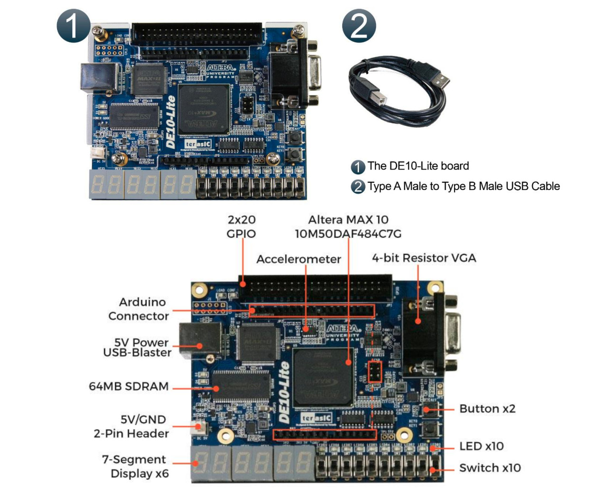
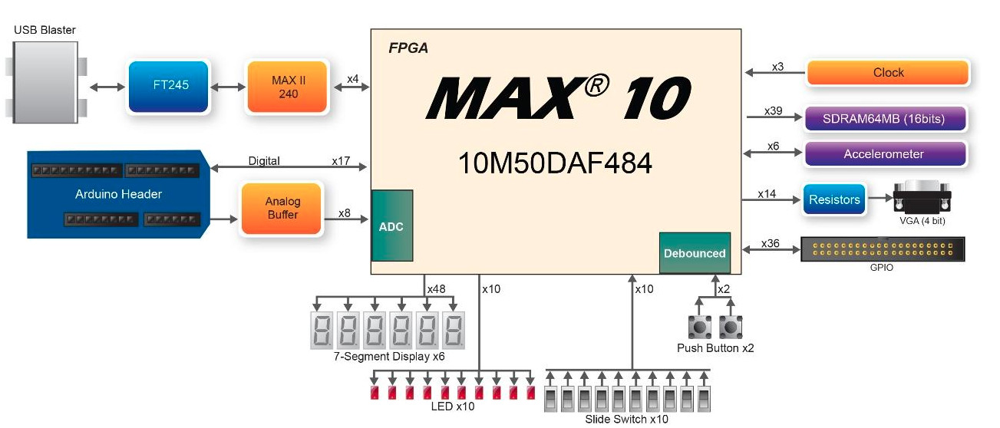
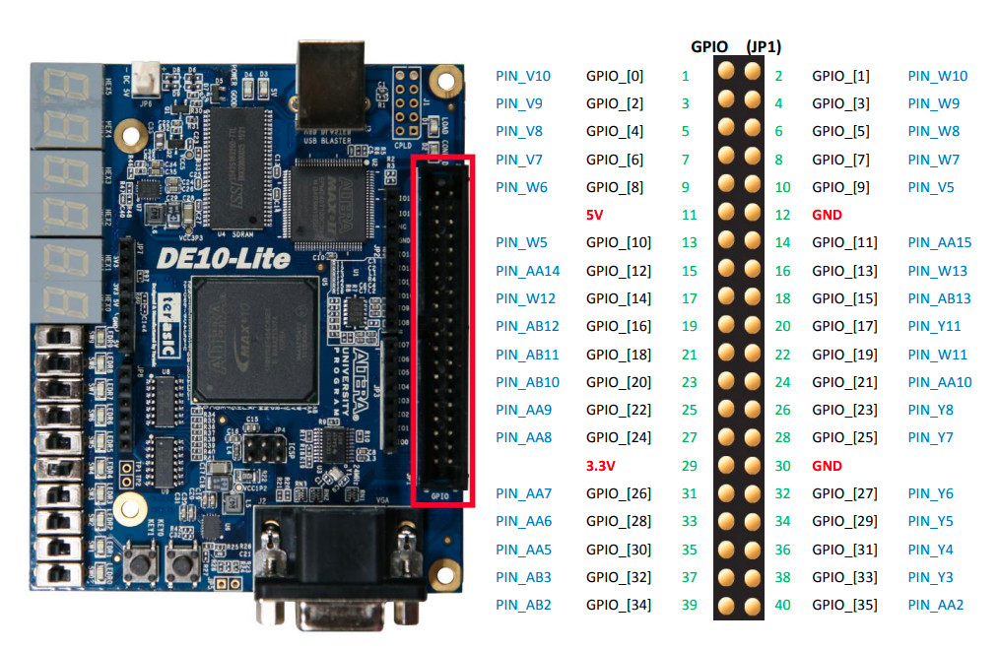
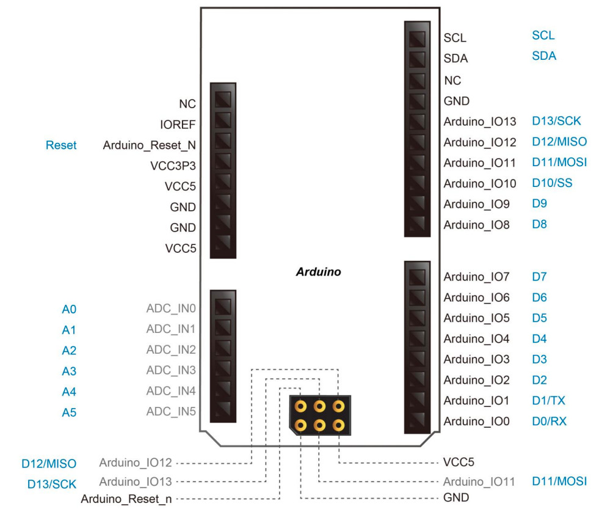
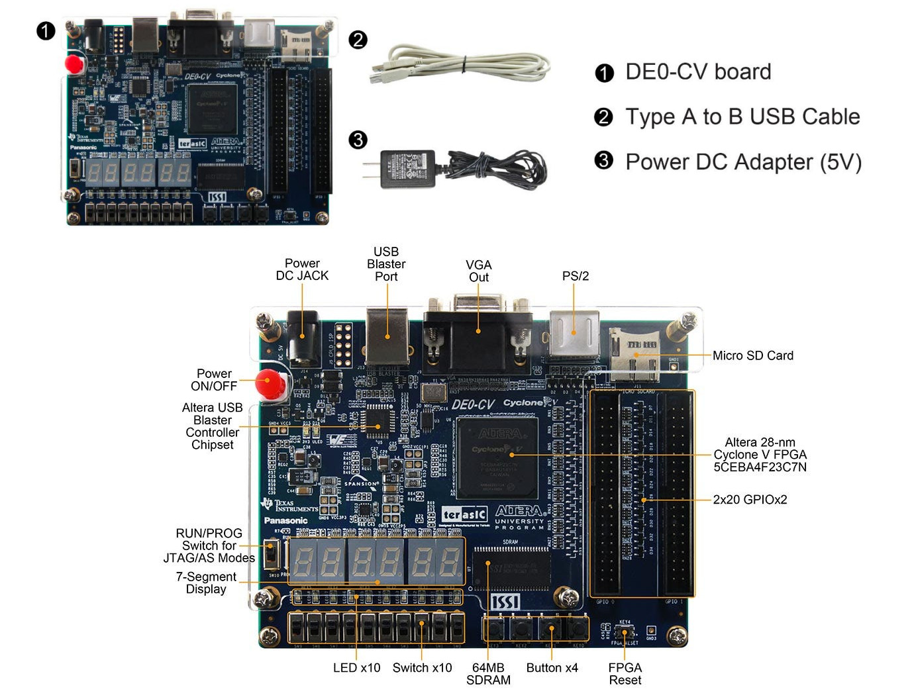
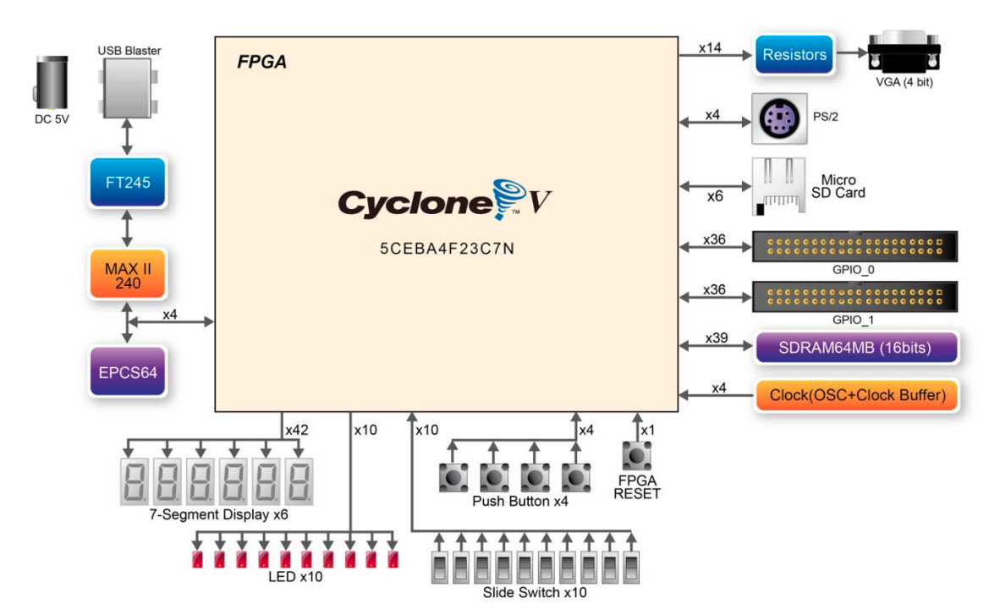

Tutorial: FPGA Boards#
FPGA Boards for Lab Sessions#
Terasic, a company based in Taiwan, has developed many FPGA boards and kits primarily for educational purposes. These boards are widely used in university-level courses around the world. Terasic FPGA boards typically feature Intel (formerly Altera) FPGA devices, such as:
- DE0-CV: Cyclone V, 5CEBA4F23C7
- DE0-Nano: Cyclone IV-E, EP4CE22F17C6
- DE0-Nano-SoC: Cyclone V SoC, 5CSEMA4U23C6
- DE1-SoC: Cyclone V SoC, 5CSEMA5F31C6
- DE2-115: Cyclone IV-E, EP4CE115F29C7
- DE10-Standard: Cyclone V SoC, 5CSXFC6D6F31C6
- DE10-Nano: Cyclone V-SE, 5CSEBA6U2317
- DE10-Lite: MAX10, 10M50DAF484C7G
There are two Intel/Altera FPGA boards available for lab sessions:
- DE10-Lite Board (preferred)
- DE0-CV Board
In most practical labs, both FPGA boards offer similar functionality and can be used interchangeably, depending on availability. However, the DE10-Lite is generally preferred. Below is an overview of both FPGA boards.
Terasic DE10-Lite Board#
A summary of the technical specifications for the DE10-Lite board (User Manual) is provided below:
- Intel / Altera MAX10 FPGA (
10M50DAF484C7GDevice)- Embedded configuration flash memory (CFM)
- On-chip ADC
- Onboard USB Blaster (FT245 + MAX-II CPLD)
- Used for FPGA programming and JTAG-based debugging
- Type B USB connector
- 24MHz clock oscillator
- Clock generator IC with 4 clock outputs (3.3-V LVTTL)
UBT_CLK_24(24MHz for USB Blaster)ADC_CLK_10(10MHz for on-chip ADC inside MAX10):PIN_N5MAX10_CLK1_50(50MHz for MAX10):PIN_P11MAX10_CLK1_50(50MHz for MAX10):PIN_N14
- Switches/Buttons/LEDs
- 10x LEDs, active-high (LEDR[9:0])
- 10x Slide Switches (SW[9:0])
- 2x User-defined Push Buttons (KEY[1:0])
- active-low, debounced with on-chip Schmitt Trigger inputs
- 6x 7-Segments (HEX0..HEX5)
- common anode (CA) type
- Two 2x20 GPIO Header (3.3V I/Os)
- Arduino UNO R3 Header (3.3V I/Os)
- 1x ADC with 6x analog input channels ADC_IN0 .. ADC_IN5)
- G-Sensor: ADXL345 (3.3V)
- 3-axis accelerometer
- SPI or I2C interface
- 4-bit Resistor DAC + VGA connector (15-pin D-sub connector)
- 64MB SDRAM, 16 bits data bus
- Power supply: 5VDC input from USB port or 5V/GND pin headers.

Figure: DE10-Lite Board

Figure: DE10-Lite Block Diagram

Figure: DE10-Lite 2x20 Connectors for I/O Pins

Figure: DE10-Lite Arduino Shield I/O Pins

Table: Pin locations for DE10-Lite Arduino Shield I/O Pins
Terasic DE0-CV Board#
A summary of the technical specifications for the DE0-CV board is provided below:
- Intel / Altera Cyclone V FPGA (
5CEBA4F23C7NDevice) - External serial configuration memory IC (EPCS64)
- Onboard USB Blaster (FT245 + MAX-II CPLD)
- Type B USB connector
- 50MHz clock oscillator (CLK_50)
- 4x buffered 50MHz clocks
- Switches/Buttons/LEDs
- 10x LEDs (active-high)
- 10x Slide Switches
- 5x Push Buttons
- active-low, debounced with a Schmitt Trigger IC (74AUC17)
- 4x User-defined (KEY[3:0])
- 1x CPU Reset (RESET_N)
- 6x 7-Segments (HEX0..HEX5)
- Common anode (CA) type
- Two 2x20 GPIO Header (3.3V I/Os)
- 4-bit Resistor DAC + VGA connector (15-pin D-sub connector)
- 64MB SDRAM, 16 bits data bus
- Micro SD Card Socket (SPI and 4-bit SD mode)
- PS/2 mouse/keyboard
- Supply voltage: 5V (via USB or DC Power Jack)
- 1x slide switch for RUN or PROG (JTAG/AS modes)
RUNposition: uploading a bitstream file (.sof) to FPGAPROGposition: flash a configuration data file (.pof) to the EPCS64

Figure: DE0-CV Board

Figure: DE0-CV Block Diagram
⚠️ Electrical Safety#
- Do not exceed 3.3V on any I/O pin. Short circuits, excessive I/O current draw or overvoltage can permanently damage the FPGA.
- Read the FPGA board manual carefully, and always verify the I/O pin functions and their physical locations before assigning them in your design.
- When interfacing with external components, verify voltage compatibility. Ensure that all I/O voltages are within the 0V to +3.3V range.
- All external circuits must share a common ground (GND) with the FPGA board to ensure correct logic level references and prevent unpredictable behavior.
- Be aware that many Arduino shields operate at 5V, while the DE10-Lite FPGA I/O pins are not 5V-tolerant. Connecting a 5V shield directly can damage the FPGA. Use only 3.3V-compatible shields or add level-shifting circuits as needed.
This work is licensed under a Creative Commons Attribution-ShareAlike 4.0 International License.
Created: 2025-05-27 | Last Updated: 2025-05-31